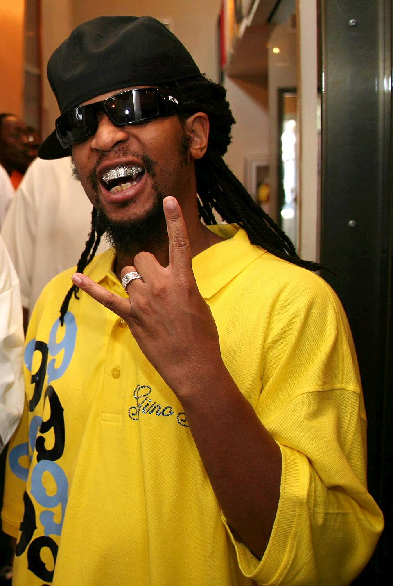
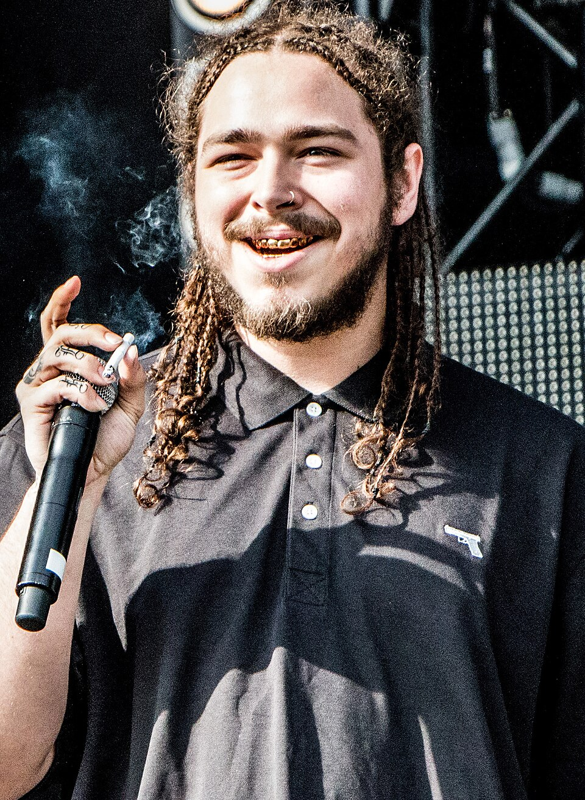
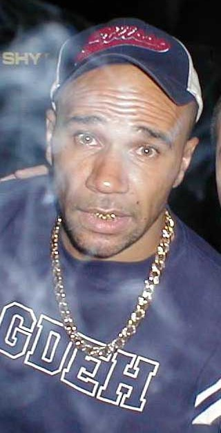
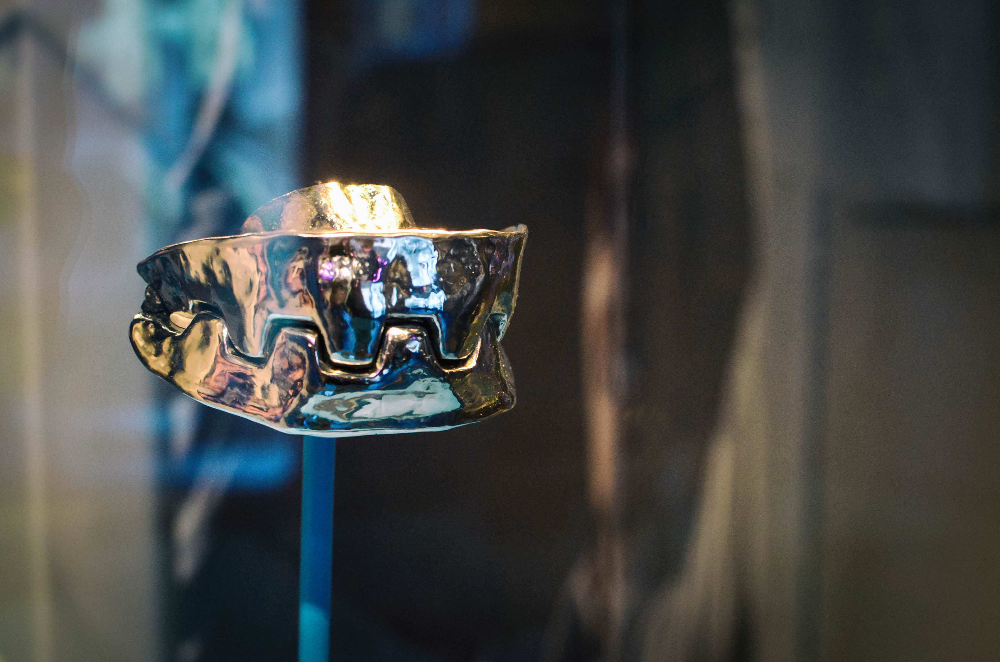

Платина и бриллианты
Жёсткий концертный блеск: плотная посадка, холодный металл и россыпь камней, которая читается даже на сценическом свете. Источник прямо описывает его signature platinum and diamond grill.
От клипов и красных дорожек до кинообразов: гриллзы работают как быстрый визуальный маркер статуса, характера и сцены.
Подборка реальных артистов с открытыми лицензированными фото. Описания ниже — дизайнерская интерпретация визуала, а не утверждение о точном составе изделия, если он не указан в источнике.
Жёсткий концертный блеск: плотная посадка, холодный металл и россыпь камней, которая читается даже на сценическом свете. Источник прямо описывает его signature platinum and diamond grill.

Верхний ряд работает как часть сценического жеста: яркий металл, крупный контраст с тёмными очками и максимальная узнаваемость в кадре.

Для такого референса хорошо работает не тяжёлый полный сет, а точечный блеск: микрокамни, белый металл и полировка, которая не спорит с татуировками и украшениями.

Британский электронный артист и актёр показывает более сдержанный вариант: не полный сет, а золотой акцент на зубах, который даёт статусный блеск без тяжёлой перегрузки улыбки.

Кино-референс из Bond-вселенной: стальные зубы Jaws из фильма The Spy Who Loved Me. Это не украшение для повседневной носки, а пример того, как металл во рту мгновенно создаёт образ персонажа.
В музыке гриллзы часто усиливают сценический образ: золото, камни, клыки, контур или полный сет работают как часть визуального языка артиста.
В кино гриллзы помогают быстро показать характер персонажа: статус, угрозу, роскошь, уличную принадлежность или фантазийную эстетику.
Звёздный референс можно использовать как отправную точку, но изделие лучше делать под собственную форму зубов, лицо и задачу.
Здесь будут видео и ссылки на сюжеты после загрузки материалов.
Видео будет добавлено после загрузки исходного ролика или ссылки на публикацию.
Видео будет добавлено после загрузки исходного ролика или ссылки на публикацию.
Фотография артиста или персонажа помогает быстрее объяснить настроение: нужен ли чистый золотой акцент, агрессивные клыки, камни, эмаль или полный сценический сет. Финальную форму всё равно лучше делать под вашу анатомию, улыбку и задачу.